The length of the input should be as close to the intended length of content as possible. This also applies to other form controls of a similar shape, like drop-down selects and text areas.
{insert image for sizing}
Use different states to help show the user how they can interact with Text Inputs.
Text Input is blank with nothing entered, no non-standard colors.
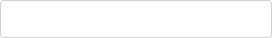
The user has clicked into the input, it’s outlined blue and the blinking text cursor appears.
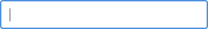
Appears grayed out. The input can’t be used and an additional action must be taken on this screen to make it usable.
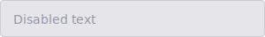
The input can’t be used and can’t be easily made usable. There are actions that can be done make it a usable eventually.
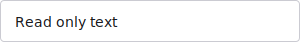
Text Input is outlined in green. Success message may appear nearby.
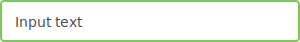
Text Input is outlined in red. Error message with details on the error will appear nearby.
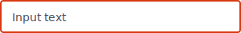
A loading icon appears on the right side of the input to indicate that something is happening.
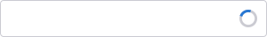
A Text Area is a subset of the text input specifically used for entering multiple sentences of information because of this, the input size is larger (width and length) than a standard input area. Text areas can also use a scroll bar and expander tab in the bottom right corner, if necessary.
We reccomend capping the max height of a text area so it doesn’t grow too large for the UI it’s in, then use a scrollbar for viewing text not within the viewing area. 150px is typically enough to get a good sense of the text within, but not blow out your screen.
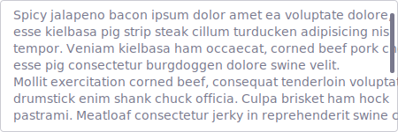
The label elements helps bring proper context to your inputs to let the user know what data to enter.
Generally a single label element should be present for a single control. For general form element labeling standards see our forms labeling documentation.
Place holder text appears inside of the input field, prior to entering data into it, and disappears. It is always used in conjunction with labels, never instead of a label. It provides an example of what you should enter in that field, and the format of that information when appropriate. An example would be phone number: (555) 555-5555.
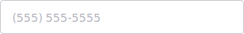
Added to front of the input field to add additional detail to what should be entered, like a dollar sign. To add more attention a container can be added to the styling. An example would be a magnifying glass to show that the input field is a type ahead search filter. These labels are typically an icon.
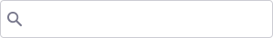
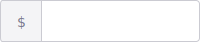
Added to front of the input field to add additional detail to what should be entered, like a percentage symbol. To add more attention a container can be added to the styling. hese labels are typically an icon.
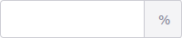
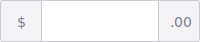
On rare occasions, you can put the button next to the input, which is often seen in search. While there’s nothing especially wrong with putting the button below the input, putting it next to it saves space and looks a bit neater. But, do not do this on standard forms that happen to have just 1 field. It’s inconsistent and unconventional. The button should be labeled with text, unless there is a very clear and deliberate icon that can be used.
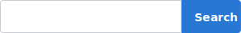
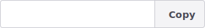
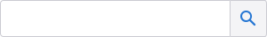